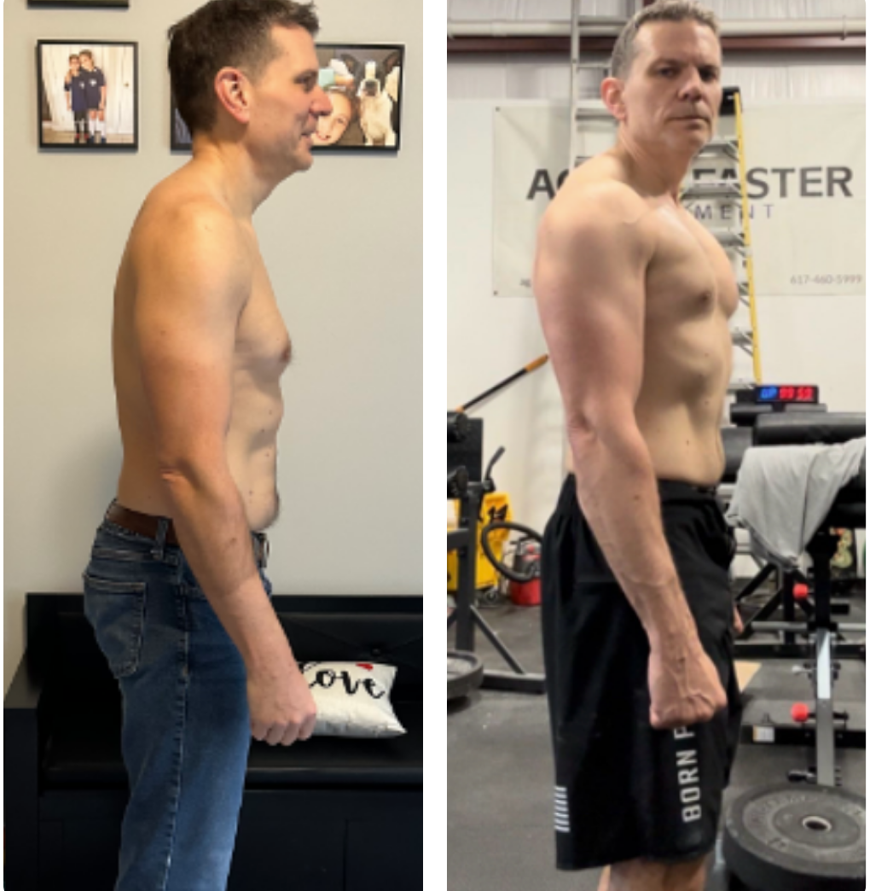

He worked out hard almost every day and kept getting more discouraged. He just kept asking himself: what am I doing wrong?
Rob is 46, an aerospace engineering manager leading a team across multiple engine platforms. The job is fast, technical, and high-pressure: customers, deadlines, and senior leadership, all at once.
What pushed him to change wasn’t a number on a scale. It was watching older family members reach their late 60s and struggle to walk or get out of a chair. They never exercised and ate poorly, and he could see himself on the same path. So at 44 he decided to take control.
CrossFit. Keto. A rotation of diets. He’d lose some weight, but he couldn’t get into shape and couldn’t understand why. He was training hard almost every day and going backwards. The same things that kept him lean and sharp in his 20s and 30s had simply stopped working.
We ran more than 1,000 biomarkers, and the reason nothing was working showed up fast. His cortisol was through the roof. That single thing was suppressing his testosterone, wrecking his sleep, and making it nearly impossible to add muscle no matter how hard he trained.
Underneath it was a sluggish thyroid and several B-vitamin deficiencies, both dragging his metabolism down. He was reacting to more than 40 foods he ate on a regular basis. And it traced back to his gut: low microbial diversity, active inflammation, and a hard time breaking down fats. His Omega-3 Index sat at 1.6%, in the highest cardiac-risk band, and his vitamin D was low.
That gut inflammation raised his system-wide inflammation, which suppressed his testosterone and left him tired and bloated. This is why the same exercise and diets that used to work for Rob couldn’t anymore. Most doctors would have handed him testosterone without ever asking why it was low. We fixed the why.
Nutrition. Out came the inflammatory foods. We rebalanced his fats and carbs and put him in a real calorie deficit, built around the way he actually eats.
Training. He kept the CrossFit and running he loved, and we layered in structured strength work so the effort finally translated into muscle.
Supplements. Gut-repair support, omega-3s to correct the index, vitamin D, and natural testosterone support, all matched to his labs instead of a generic stack.
Coaching. Weekly calls, daily check-ins in the app, and one-on-one support whenever he needed it. Adjustments came from his data, not a template.
Once his weight came down, we shifted to building muscle, and that is when the body composition really moved.

“My energy levels improved drastically. No need to nap. My focus got a lot better. I’m in the best shape of my life, more confident, and I feel younger than my actual age.”
“Work hard, don’t make excuses, and stay consistent, even if it hurts. Care about yourself, not what others think.”